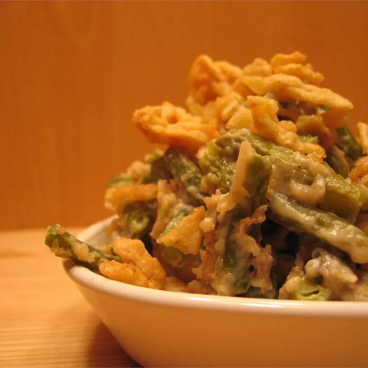

Green Bean Casserole

Description
You'll never settle for the casserole that uses
canned soups again after eating a scoop of this grandma-approved dish.
Sour cream helps create the rich sauce, while buttery crackers make a crunchy topping.
Ingredients
- Butter: You'll use two tablespoons of butter for the green beans and two tablespoons for the topping.
- Flour: All-purpose flour thickens the green bean mixture, resulting in a decadent casserole.
- Sour cream: A cup of sour cream adds richness and pleasant tanginess.
- Onion: Diced white onion lends complexity, taking the flavor up a notch.
- Seasonings: A teaspoon of salt enhances the other flavors, while a teaspoon of sugar lends a touch of subtle sweetness.
- Green beans: This recipe calls for three cans of French-style green beans. You can use fresh green beans if you prefer.
- Cheese: You can use pre-shredded Cheddar cheese, but freshly grated is always best.
- Cracker crumbs: Buttery cracker crumbs give the topping a welcome crunch.
Steps
- Make the casserole: Melt butter in a large skillet, then add flour and cook for about a minute. Stir in sour cream, onion, salt, and sugar. Add green beans and toss to coat.
- Top the casserole: Transfer the mixture to a casserole dish. Spread the cheese over the green bean mixture. Mix the melted butter and crumbs, then sprinkle evenly over the cheese.
- Bake the casserole: Bake in the preheated oven until the topping is golden and bubbly.